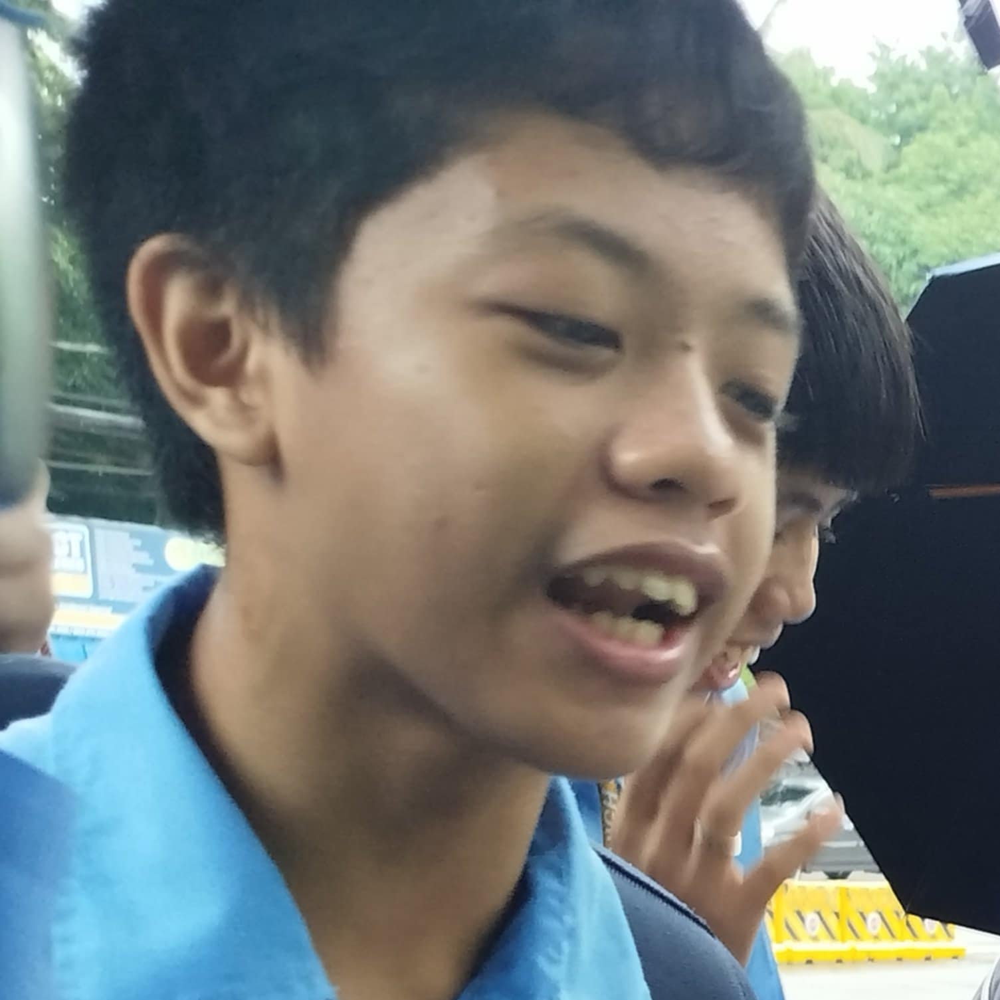

OUR MEMBERS
Fathers Of Sybauology
Secondary Sybaulogians
Kirby Alexander C. Ipac
9-Bernoulli
Juan Miguel A. Orfalas
9-Bernoulli

Xy Jay M. Cerda
9-Bernoulli

Marion Iuris D. Mapa
9-Bernoulli
Tertiary Sybaulogians
NOTE: These members have no info.
Griffen O. Elpanag
9-Bernoulli

Emmanuel N. Baldo
9-Bernoulli
Alfred Raeyvin Cabanas
9-Pascal